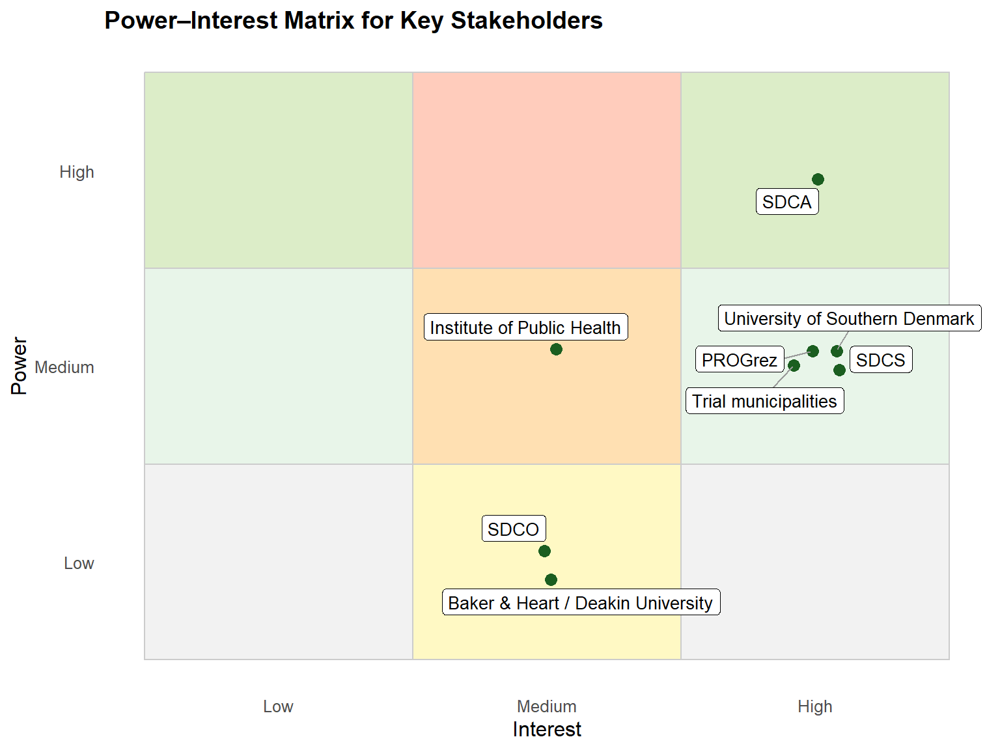

library(ggplot2)
library(ggrepel)
library(dplyr)
# Define stakeholders and their approximate power/interest levels
stakeholders <- tibble::tribble(
~Stakeholder, ~Power, ~Interest,
"SDCA", "High", "High",
"SDCO", "Low", "Medium",
"SDCS", "Medium", "High",
"PROGrez", "Medium", "High",
"Institute of Public Health", "Medium", "Medium",
"Baker & Heart / Deakin University", "Low", "Medium",
"Trial municipalities", "Medium", "High",
"University of Southern Denmark", "Medium", "High"
)
# Convert to numeric scales for plotting
power_levels <- c("Low" = 1, "Medium" = 2, "High" = 3)
interest_levels <- c("Low" = 1, "Medium" = 2, "High" = 3)
stakeholders <- stakeholders %>%
mutate(
Power_num = power_levels[Power],
Interest_num = interest_levels[Interest]
)
# Add small jitter to prevent text overlap
set.seed(123)
stakeholders <- stakeholders %>%
mutate(
Power_jit = Power_num + runif(n(), -0.1, 0.1),
Interest_jit = Interest_num + runif(n(), -0.1, 0.1)
)
# Define quadrant colors
bg_colors <- data.frame(
xmin = rep(c(0.5, 1.5, 2.5), each = 3),
xmax = rep(c(1.5, 2.5, 3.5), each = 3),
ymin = rep(c(0.5, 1.5, 2.5), times = 3),
ymax = rep(c(1.5, 2.5, 3.5), times = 3),
fill = rep(c("#f2f2f2", "#e8f5e9", "#dcedc8",
"#fff9c4", "#ffe0b2", "#ffccbc",
"#f2f2f2", "#e8f5e9", "#dcedc8"), 1)
)
# Plot
ggplot() +
geom_rect(data = bg_colors, aes(xmin = xmin, xmax = xmax, ymin = ymin, ymax = ymax, fill = fill), color = "grey80") +
scale_fill_identity() +
geom_point(data = stakeholders, aes(x = Interest_jit, y = Power_jit), size = 3, color = "#1b5e20") +
geom_label_repel(
data = stakeholders,
aes(x = Interest_jit, y = Power_jit, label = Stakeholder),
size = 3.5,
color = "black",
fill = "white",
box.padding = 0.3,
label.size = 0.2,
segment.color = "grey60",
max.overlaps = Inf
) +
scale_x_continuous(breaks = 1:3, labels = c("Low", "Medium", "High"), limits = c(0.5, 3.5)) +
scale_y_continuous(breaks = 1:3, labels = c("Low", "Medium", "High"), limits = c(0.5, 3.5)) +
labs(
x = "Interest",
y = "Power",
title = "Power–Interest Matrix for Key Stakeholders"
) +
theme_minimal(base_size = 12) +
theme(
panel.grid = element_blank(),
legend.position = "none",
plot.title = element_text(face = "bold", size = 14)
)